1. Surveillance System to Track Individuals Using Gait Biometrics
PhD Project, Manipal University Jaipur, India
Human gait recognition using the model-free approaches can be done through the analysis of moving shape and motion of the subject's body. The benefit of this approach is that the recognition can be performed at large distance with sufficiently low-resolution images. This approach is very simple and intuitive to extract gait signatures from the gait frames.
- Duration : Jan 2018 – Dec 2022
- Technology: Deep Learning, Computer Vision, Biometrics (Gait)
- Application: Surveillance
- Interface: GUI
- Hardware: Jetson Nano
- Dataset: CASIA, TUM, OUISIR
The most interesting research in biometrics is automatic gait recognition when compared to other human unique features. Though there are many approaches to overcome the variations in gait recognition, still there are challenges to recognize a person. Challenges are distinctive gait datasets, degree of stability in identifying, sensing modality, covariates and spoofing effects, and exploring new algorithms. From the developmental perspective, human gait recognition has gained maturity in adopting recent methodologies to provide the high accuracy and the same was analyzed and studied in the view of vision based system. In this paper, the basic knowledge about the human gait is identified and explored. The comparative analysis with the existing techniques of gait recognition were discussed. In this work, the survey of recent deep architecture model on human gait identification, authentication and clinical applications were discussed.
The Gait Recognition System (GRS) is a biometric system that is utilized for security. Because the computational complexity of GRS is so great, a high-end hardware setup is required. It is tough to execute such algorithms on edge devices and if executed on cloud then network connectivity and data security issue arises. Furthermore, changes in an individual’s movement and wearing clothing, and carrying a bag are key covariate variables that affect a system’s performance. Furthermore, with GRS, identification under varied view angles is a significant difficulty. In this, a unique, completely automated, and optimal technique for edge devices for GRS under various covariates is proposed using deep learning as DeepGait. Preprocessing original video frames, creating an optimal deep learning pipeline utilizing the CNN model for feature extraction, reducing additional features, hyper tuning the network for all covariate circumstances, and ultimately subject detection are the key phrases. The extraction of CNN features is a crucial phase to obtain the most functional features. To do this, we carefully pick network settings. We created a network after running the datasets numerous times and attaining the lowest error rate. In the CASIA B dataset, eleven distinct view angles, occlusion in carrying state, and apparel variation are employed in the assessment method. An accuracy of 98.64 percent is reached on the jetson nano. Compared to current state-of-the-art methodologies, the results indicate a considerable increase in accuracy and runtime on edge devices like the Jetson Nano.
Application Interface
Accuracy
Results
2. Face De-Identification Pipeline Based on Physiological & Machine Recognition Experiments Using Deep Learning
Croatian Government funded project with with Prof. Dr. Scientist. Slobodan Ribarić, Zagreb Croatia
We proposed a reversible face de identification pipeline that modifies face geometry and texture. Fourteen parameters for geometrical modification are used. For texture modification fixed face texture template is used.
- Duration : 5 Sept 2016 – 30 Dec 2018
- Technology: Deep Learning, Computer Vision, Biometrics (Face)
- Application: Surveillance, De-Identification
- Hardware: Jetson Nano
- Dataset: Famoud faces
We compiled a set of 30 face images of famous people (7 females and 23 males with ages ranging from 30 to 75) from politics, sports, business and entertainment. The used testing procedure is like the one used for diagnosing of the prosopagnosia a neurological disorder characterized by the inability to recognize human faces. Images of de-identified faces of famous persons are presented to the test subjects with a request to try to recognize them. Obtained answers are recorded for later matching with ground truth answers. The main aim of the performed testing is to evaluate the impact of geometrical and texture modifications on human ability to recognize faces. The evaluation is performed by means of crowdsourcing performed by 150 test subjects (20 females and 130 males). The test subjects were informed that faces in the tests are de-identified faces of famous people. The background (ie context) and biometrical ques like hair and ears, that a user can use for face identification are removed in all tests.
Results
We have investigated impact of various geometrical and texture modifications of face components like cyes, eyebrows, nose and lips on ability of humans and machines to recognize faces. The crowdsourcing and machine face recognition experiments were performed on images of famous people collected from the Internet. The obtained results in both types of experiments showed that face texture has stronger impact on a level of privacy protection then face geometry shape) modifications.
Application Interface
face Dataset
3. Classification Of Gait Data Using Machine Learning Techniques To Categorise Human Locomotion
M.Tech Project, VCE Rohtak
Shown the importance of gait recognition in order to detect whether a human GAIT is normal gait or pathological gait.
- Duration : 5 Sept 2014 – 30 June 2016
- Technology: Machine Learning, Computer Vision
- Application: Medical, Early detection
- Hardware: Jetson Nano
- Dataset: Crouch dataset.
Three main approaches in gait classification i.e. back propagation and KNN. After comparing the testing and training results we get better results using back propagation learning technique. The whole work of paper is to describe the classification technique of different type of GAIT into following four categories: Normal, crouch2, crouch3, crouch4 using back propagation and KNN. When the training of data is done then the output of will be either four options i.e. Normal, crouch2, crouch3, crouch4. If the testing data set is tested on the proposed system then the output must be normal GAIT if the classifier classifies it as normal data or the output will be abnormal GAIT data if the classifier classifies it as crouch2, crouch3, crouch4 in any of these three categories. .
Application Interface
Accuracy
Results
So we first select the feature and identify the principal feature then we classify gait data and use different machine learning techniques (K-mean, KNN and Back Propagation) and performance comparison is shown. Experimental results on real time datasets proposed method is better than previous method as far as humanoid locomotion classification is concerned.
4. Low-cost IoT enabled Board Marker using Image Processing
IoT Project, Manipal University Jaipur, India
This project is based on robotics. Robots have been easing human tasks since decades and in addition to the numerous tasks they perform for us, this time its desired that they contribute towards modern education.
- Duration : Jan 2019 – Dec 2020
- Technology: Image Processing, IoT
- Application: Automation, class room teaching
- Interface: GUI - Processing Software version 2.2
- Hardware: Arduino mega, 9V DC supply, Two Stepper Motors, One Servo Motor, Male-Male, Male-Female and Female-Female Jumper Cables, 16 Teeth Pulley Cable, Drawing Board, Drawing Instrument (e.g. Marker), L293D Motor Shield, Heat Sinks, Weights
- Dataset: JPG/PNG and SVG format
The project would be implemented keeping the teaching industry in mind but could also find its applications in areas that require designing. The basic idea of this project is that a robot would be fed a reference drawing, mostly text-based input or a diagram, which it would then replicate on an output area of our choice for example a white board or a notebook. The benefits of such a robot would be that it would save time that would be required to produce a complex and detailed diagram on a white board for teaching purposes and quite obviously be helpful in graphic designing on materials of our choice if implemented and refined further. The system works on a pulley system where an end-effector is manipulated using the pulleys. The application running on the PC is fed with the image which the recognizes the edges of the image and then sends command numbers to the microcontroller. The microcontroller upon receiving the command numbers performs commands associated with the received command numbers. The microcontroller rotates the stepper motor as per the need of the image to be drawn, the servo motor attached at the pen-holder acts as a pen lifting mechanism similar to the action we perform while writing or drawing. The pulley system adds to the maneuverability of the system while cutting down on costs. The system works as per predicted and produces good quality drawings on the drawing pad.
Application Interface
Accuracy
Results
With the 9V of DC supply, the stepper motors run smoothly with no jitters. The circuit doesn’t experience overheating at this power supply. The systems performance is heavily dependent on the power supply. The pen-lift actions are fluid and precise and the system responds quickly to the drawing commands somewhere between 0.5-1 second.
5. IoT Enabled Mechanical Chess based on Artificial Intelligence
IoT Project, Manipal University Jaipur, India
Automated AI chess board is a physical chess board which lets the player play against an AI the chess board is powered by raspberry Pi.
- Duration : Jan 2018 – Dec 2019
- Technology: Artificial Intelligence, Robotics, IoT
- Application: Playing chess on a real chess board against machine
- Interface: Raspberry Pi, L298n Motor drivers
- Hardware: Flexible Shaft Coupling, Stainless Steel Lead Screw Rod with Nut, Pillow Block Bearing, box/wood/table, servo motor, raspberry pi, arduino, Chess board, Magnets, Electromagnets, Spools, Belts
- Dataset: Stockfish
The Field of Artificial Intelligence is very vast but the prime goal of researchers and engineers is to enable the computer to think like a human. And a game of chess require a lot of thinking and logic, for a long time we have been playing the game of chess to exercise our brains and entertain ourselves at the same time. And we all love the feel of an original chess board. It would be really nice to play the game of chess against an Physical Board. Using the core XY motion of two motors we are enabling an electromagnet to span a whole chess board and the electromagnet will be responsible to slide the pieces across the whole board. Using two Nema 17 motors and two lead screw mechanism for our X and Y axises both powered by L2N8 motor drivers and a relay module to control the electromagnet the chess pieces with sufficiently strong magnets attached to the bottom will slide across the board. Using the Min-Max spanning tree providing an initial score to each player the goal of our AI is to minimize the score of the opposing player and trying to maintain its own score. User will make a move and depending on the move made by user our AI will generate a move tree containing possible moves. Every piece of the board has a rank and a score which is equal to the sum of all the ranks of alive pieces of that particular color will be assigned at each step to the color. Each node of the move tree contains the score corresponding to the move, treating scores as weights of the tree we apply Min-Max search to make the best possible move.
Application Interface
Results
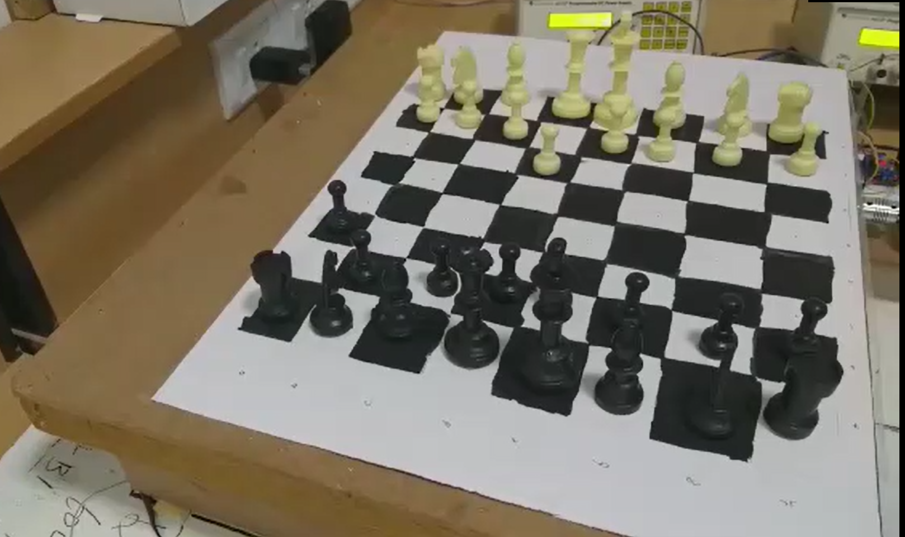Results
Tests were performed with certain parameters in mind Speed of AI: The AI performed above expectations in terms of speed. X motion track and motor: It ran fast and delivered accurately but made a lot of noise, indicating that it was not perfectly smooth. Y motion track and motor: It was smoother than the X track but was slightly slower due to the extra weight and added friction from the optical axis shafts. Electromagnet: It was stronger than expected and due to unevenness of board occasionally lost pieces, this was corrected by reducing the height of the mount on which it rested and increasing the voltage to give more power. We used a new approach to core XY motion which efficiently handles large weight while still maintaining the speed. The AI developed for our project is fast and very reliable for low end embedded systems.
6. Optimized Navigation using Deep Learning Technique for Automatic Guided Vehicle
IoT Project, Manipal University Jaipur, India
This study tackled the mentioned problems with a straightforward and cost-effective solution, using end to end learning and replacing the numerous sensors with a camera and commandeering just the forward, backward, left, and right controls.
- Duration : June 2018 – Dec 2019
- Technology: Deep Learning, IoT, Computer Vision
- Application: Smart car, Autonomous, Detect Stop Signs and Traffic Lights and Avoid Front Collision.
- Software: Raspbian OS, 2. Python, OpenCV Libraries
- Hardware: RC Car, Raspberry Pi, Ultrasonic sensor, PI Camera
- Dataset: Stimulator for autonomous car by Udacity generated training data
Autonomous driving has passed the point of being called the biggest step, as the smart car revolution is already taking shape around the world. Self-driving cars are relevant if not prevalent and the biggest obstacles to reach the mass adoption are customer acceptance, cost, infrastructure and the reliance on several onerous algorithms that include perception, lane marking detection, path planning and variation in pathways. In this research, authors have used most popular method of deep learning i.e. Convolution Neural Network (CNN) to train the collected data on the VGG16 model. Later these have optimized directly by the proposed system with cropping each unnecessary image and mapping pixels from a single front-facing camera to direct steering instructions. It has been observed from the experimental work that proposed model has given better result than the existing work i.e. increase in the accuracy from 88% (Udacity training dataset) to 98% (proposed). This model is suitable for industrial use and robust in real time scenarios therefore can be applied in modern industrialized systems.
Application Interface
Results
Accuracy
After rigorous test runs on tracks apart from which the car is trained on, it is concluded that the car can function competently in a controlled environment. The neural network is also working fittingly and gave 98% results.
7. IoT based Smart Assistance Spoon for Parkinson Patients
IoT Project, Manipal University Jaipur, India
Our primary objective is to make the Robotic arm, having 4 servo motors to interface with the development of a microcontroller based Robotic arm.
- Duration : Jan 2017 – Dec 2018
- Technology: Artificial Intelligence, Robotics, IoT
- Application: Feed the patient with no efforts needed
- Interface: Android App
- Hardware: Raspberry Pi, Servo Motors, Stepper motor, Robotic arm, Breadboard, Jumper Cables, Other modules like Bluetooth module, WIFI module
- Dataset: Patient height
The arm control by robotics is very popular in the world of robotics. The essential part of the robotic arm is a programmable micro controller-based brick capable of driving basically four servos to form an anthropomorphic structure. Our primary objective is to make the Robotic arm, having 4 servo motors to interface with the development of a microcontroller based Robotic arm. It provides more interfaces to the outside world and has larger memory to store many programs. The technology for assisting people who are functionally challenged has improved over the recent decades. A group that suffer from this ailment are people with Parkinson’s disease. Parkinson’s disease (PD) is a neurological degenerative disease that causes uncontrollable shaking and makes it difficult for the affected person to eat. There is no cure for PD, but there is technology and potential for new technology that can help people who carry the disease with their daily lives. The machine will be of great use to perform repetitive tasks of picking and placing of small edibles upto 500 grams in one serving. It can be used to do small assembly work effectively due to its great added accuracy for placement purpose, which has further extended scope of our project.
Application Interface
Results

Accuracy
The robotic arm model was successfully implemented which was able to pick up food from the tray and direct it towards the mouth of the user. The Bluetooth app for connecting to the arm, controlling and terminating the process was also developed.
8. Unmanned Aerial Vehicle for Surveillance
IoT Project, Manipal University Jaipur, India
Drone is an all-purpose medical toolkit that can be automatically flown to any emergency situation and used to guide citizens to make non-technical lifesaving procedures.
- Duration : Jan 2020 – Present
- Technology: Artificial Intelligence, Robotics, IoT
- Application: Surveillance
- Interface: Controlling quadcopter with mobile application
- Hardware: Quadcopter, Battery, Ardupilot, ESCs(electronic speed controllers), Gyroscope, wifi module, Installing camera with quadcopter, Inserting microphone in drone, Interfacing different Sensors
- Dataset: Environment
When a medical emergency takes place in natural flood, the response time can make all the difference between a life saved and a life lost. Unfortunately, ambulances can’t reach in the place due to over water flooding, in which time a cardiac arrest victim may have already succumbed to a lack of oxygen to the brain. Drone is an all-purpose medical toolkit that can be automatically flown to any emergency situation and used to guide citizens to make non-technical lifesaving procedures. With our drone we dramatically increase this survival rate. The incorporation of a two-way, video supported, communication channel in the drone between operators and the first responders will improve first care. Successful drone usage by lay-persons is currently at 20%. With personalized instructions and communication on the drone, this can be increased to 90%. In short, the drone helps to save lives by extending existing emergency infrastructure with a network of fast and compressed video broadcasting channel capable of bringing emergency supplies and establishing communication between dedicated source and destination.
Results
In this project, we are building a drone which can provide live video coverage for monitoring purpose. Additionally, GPS module can also be used. GPS module will give us the location of the drone. Then, after attaching telemetry device, waypoints can be given to drone so that it can automatically go to the required location and come back to the same place from where it was launched.
Application Interface
Hardware Interface
9. Smartphone-based Sleep Staging using 1-Channel EEG
IoT Project, Manipal University Jaipur, India
Our project allows for accurate sleep staging, informing the user with information such as the duration of each sleep stage he was in, the current sleep stage, etc with the convenience of it being on a smartphone without the need for any external servers, thus allowing for sleep staging without the need of network access.
- Duration : Jan 2021 – Present
- Technology: Artificial Intelligence, Deep Learning, IoT
- Application: Detect sleep stages
- Interface: Smartphone App
- Hardware: EEG headset
- Dataset: Physionet.org which consisted of different signals from the EEG
Our project is a smartphone-based sleep staging system with two main components: the application and the EEG band. The EEG band can be connected to the smartphone using Bluetooth, which sends the EEG signals to the phone for analysis of the sleeping user. The application then scores the sleep presenting the information to the user to infer their sleeping patterns. It can also be used for development of user interface that triggers stimuli in specific sleep stages based on further improvements. The project employs the use of a Machine Learning model paired with a smartphone to analyse the EEG input, allowing for classification of the sleep stage of a person. We will be using an EEG with wireless functionality. The project has been divided into 4 phases: Research, ML model development, Android app development and Testing/Improvements.
Results
We have successfully made a ML model and an Android app demonstrating the technology. Since there was a lack of an EEG hardware, the app is using sample data. The app successfully demonstrated the input, which can use any sample data that the user gives and can show the result in the form of a chart as well as show the sleep stage. The project is a success in its circumstances. With newer technology and hardware there are many improvements to be made.
Hardware Interface
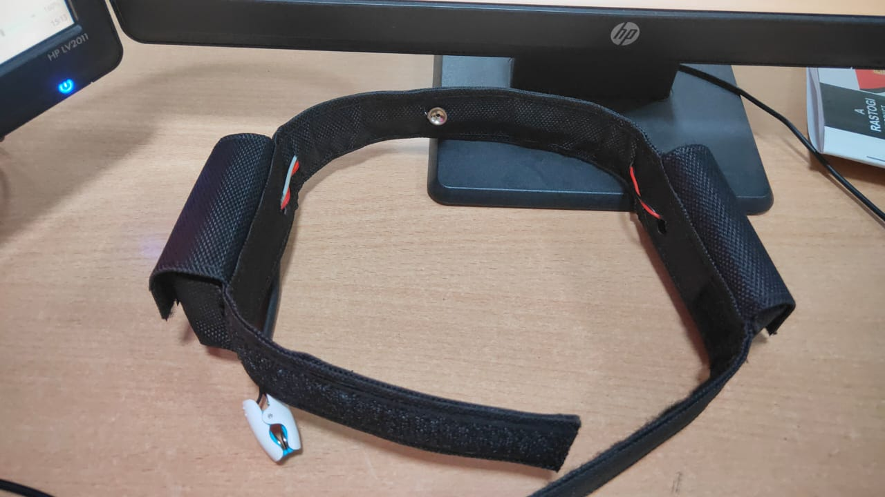Accuracy
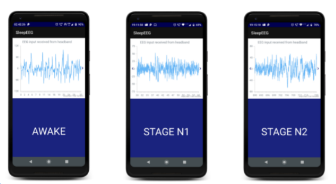10. IoT based Cloud Enabled Automated Weather Reporting and Prediction System
IoT Project, Manipal University Jaipur, India
The objective is to monitor and report weather conditions so that one is informed beforehand and necessary actions can be taken to reduce the damage by any calamity by forecasting it.
- Duration : Jan 2018 – Dec 2019
- Technology: Machine Learning, IoT, Data Analytics, Cloud Computing
- Application: Weather Reporting and Prediction
- Interface: Arduino IDE, Website, Thingspeak, MATLAB, Jupyter Lab
- Hardware: Wi-Fi module, Arduino Mega, LCD Display, MQ-135, BMP-180, Dust Sensor, Rain Sensor, LDR Sensor, MQ-7, DHT11
- Dataset: Kaggle
The weather can have great impact on lives. Weather changes can influence wide range of human activities and affect agriculture and transportation. The project’s objective is to monitor and report weather conditions so that one is informed beforehand and necessary actions can be taken to reduce the damage by any calamity by forecasting it. Through weather monitoring system we can collect the information according to current and previous data we can produce the results in graphical manner. In addition to this, there is one research paper that has discussed monitoring these three environmental conditions; however, there has been no mention about having actuators to modify. So, our main idea was to coin a system that can sense the main components that formulates the weather and can be able to forecast the weather without human error. We will be analyzing temperature, pollutants, humidity and pressure and will predict the weather. Existing models are expensive in contrast to ours and hence it will make monitoring local area feasible as it will be cheaper.
Results
The parameter values collected from DHT11 sensor are stored on internet using cloud, which is used for further analysis using MATLAB. The data collected through sensors can be viewed on a web portal.
Application Interface
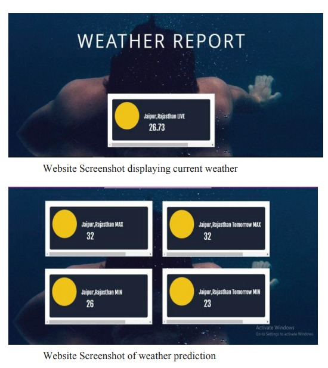Accuracy
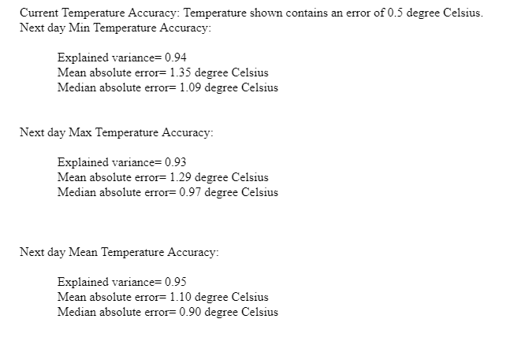11. IoT-Based Cloud-Enabled Smart Electricity Management System
IoT Project, Manipal University Jaipur, India
In this project, we implemented the basic functionalities of an electric meter in a smarter and more efficient manner. We made an attempt to simplify the process of electric meter reading collection and analysis, thereby making it efficient instead of the tedious traditional approach.
- Duration : 12 October 2016 - December 2017
- Technology: IoT, Cloud Computing
- Application: Energy saving, Meter billing
- Interface: Smartphone App
- Hardware: Wi-Fi module, Arduino Uno, LCD Display, Step-down, Transformer, rectifier, energy meter, current sensor, bulb, resistor
In the age of digitalization, Internet-based applications are gaining popularity at an exponential rate. Today, everyone wants to make their lives easier and devices smarter. In the age of automation, most of the devices we interact with on a day-to-day basis, for example, air conditioners, refrigerators, etc. are made increasingly intelligent to simplify our lives and make it comfortable. Using the principles of IoT and AI, we can create home automation devices such as automatic security devices and e-meters that make our homes smarter and more secure. Keeping a track of how much electricity is consumed per household becomes imperative seeing the rate at which global warming is increasing. Gone are the days where users had to go to meter reading room and take down readings. By employing IoT concepts, we can simplify this tedious process and record the reading over cloud for easy accessibility. The major advantage of digitalizing the process is that the user has the facility to view his consumption remotely, i.e., anywhere in the world. This also enables the user to keep a log of how many units of electricity a device is consuming and with how much amount the user is being charged fairly or not. Also, it was observed that the new system was more accurate and faster than the existing systems. By simple application of IoT principles, current sensor, and microcontrollers, we have streamlined the process and moved the process to a cloud-based application. This not only provides remote accessibility but also accountability and reliability.
Results
We have successfully made a ML model and an Android app demonstrating the technology. Since there was a lack of an EEG hardware, the app is using sample data. The app successfully demonstrated the input, which can use any sample data that the user gives and can show the result in the form of a chart as well as show the sleep stage. The project is a success in its circumstances. With newer technology and hardware there are many improvements to be made.
Hardware Interface

Accuracy
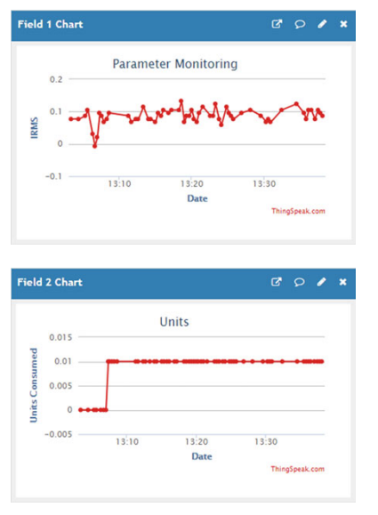12. Human Assistant Robot
IoT Project, Manipal University Jaipur, India
Making Self-Navigation Robot to navigate autonomously in any environment. When designing human robot collaboration system or Human assistant robot the first thing to flash in our mind is the objective since there are numerous tasks to be carried out in human bio daily life by a human being or what should be the productive throughput of such collaborations.
- Duration : June to December 2018
- Technology: Robotics, IoT, Artificial Intelligence
- Application: Human Assistance
- Interface: Smartphone App
- Hardware: Arduino Mega, Raspberry pi, Step-down, Transformer, resistor, Servo-motor, IR sensor, UV sensor, Breadboard, Wheels
In the age of digitalization, Internet-based applications are gaining popularity at an exponential rate. Today, everyone wants to make their lives easier and devices smarter. In the age of automation, most of the devices we interact with on a day-to-day basis, for example, air conditioners, refrigerators, etc. are made increasingly intelligent to simplify our lives and make it comfortable. Using the principles of IoT and AI, we can create home automation devices such as automatic security devices and e-meters that make our homes smarter and more secure. Keeping a track of how much electricity is consumed per household becomes imperative seeing the rate at which global warming is increasing. Gone are the days where users had to go to meter reading room and take down readings. By employing IoT concepts, we can simplify this tedious process and record the reading over cloud for easy accessibility.
The major advantage of digitalizing the process is that the user has the facility to view his consumption remotely, i.e., anywhere in the world. This also enables the user to keep a log of how many units of electricity a device is consuming and with how much amount the user is being charged fairly or not. Also, it was observed that the new system was more accurate and faster than the existing systems. By simple application of IoT principles, current sensor, and microcontrollers, we have streamlined the process and moved the process to a cloud-based application. This not only provides remote accessibility but also accountability and reliability. This research work stirs plans to develop a personal assistant robot that has following features. The robot can perceive normal objects that are seen in day-to-day lives and can pass on the information as voice messages which can significantly help old and outwardly impeded individuals. It can read out text messages from an image which again can significantly help old and outwardly impeded individuals. It acts as an empathy robot by perceiving facial feelings and is programmed to play some music according to the detected emotion of the user. It also can find out whether the user is wearing a mask and if not can give an alert voice message. Lastly, it can also has Amazon Alexa speech assistant technology.
Results
We have successfully made and navigated Human Assistant Robot. The HAR (Human Assistant Robot) is a personal assistant robot designed to take over the task of retrieving water bottles from a fixed location inside office such as refrigerator of shelf, making tea or coffee without the need for human intervention in basic pick and place functions. The design goals for this project are to create applications working in concert to complete the task of picking of bottles (or any other goods).
Interface
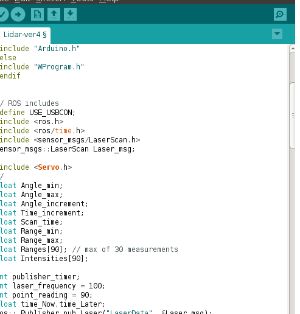Results
13. Drone Based Flying Solution for Medical Emergencies intended in Disaster Management
IoT Project, Manipal University Jaipur, India
Drone will fly back to doctor and necessary medications are placed on the Drone and this time Drone is used to carry the medications to patient for temporary relief or extension of emerging situation for certain amount of time.
- Duration : July 2016 Dec 2016
- Technology: Robotics, IoT, Artificial Intelligence
- Application: Disaster management, Emergency management
- Interface: IBM Bluemix cloud, Netbeans IDE, Android studio, Windows 10 OS, Putty remote server
- Hardware: Raspberry Pi 3 model B, Compact Drone capable of carrying 2kgs payload into it, Blood pressure sensor, BMP180 Biometric temperature and pressure sensor, ECG sensor, FSR (Force sensitive resister), Pulse sensor, 7V to 12V DC power supply, Android device, USB cables, Raspberry pi camera, Connecting wires, GSM adapter, GPS and GPRS modules, Electronic components like resisters, capacitors, operational amplifiers.
The proposed research plan we are using sensors for monitoring vital health parameters such as, ECG, heartbeat, Temperature, and Pressure. And making a wearable device which includes all sensors into it and a Drone is used to carry this device from one place to free defined destination place. Basically we are using that wearable device to measure bio parameters and put that data into the cloud using various available internet protocols, and that data is made accessible to a doctor or medical practitioner for making preliminary medical decisions. Data is continuously gathered to an automatic processing system and made available to medical staff, who may take necessary actions in emergency cases. Doctor will have an application to fetching the data from cloud to his phone in real-time. Based on the data variations from patient’s body and with his medical experience he is most likely to take appropriate prescriptions and suggest these to other end for treatment purpose. Mean time while doctor analyzing the data from cloud, the Drone will fly back to doctor and necessary medications are placed on the Drone and this time Drone is used to carry the medications to patient for temporary relief or extension of emerging situation for certain amount of time.
Results
Designed a sensor protocol hardware wearable architecture, which can accommodate a variety of sensors for measuring bio parameters, algorithms, android applications. Developed energy-efficient and performance-guaranteed cooperative application. Implemented and assessed the performance of the protocol stack in a WBAN tested. Integrated the proposed solutions in real medical devices and validate them in real working environments. Data which is stored in cloud can be further enhanced for predictive maintenance of health in cloud health service system.
Interface
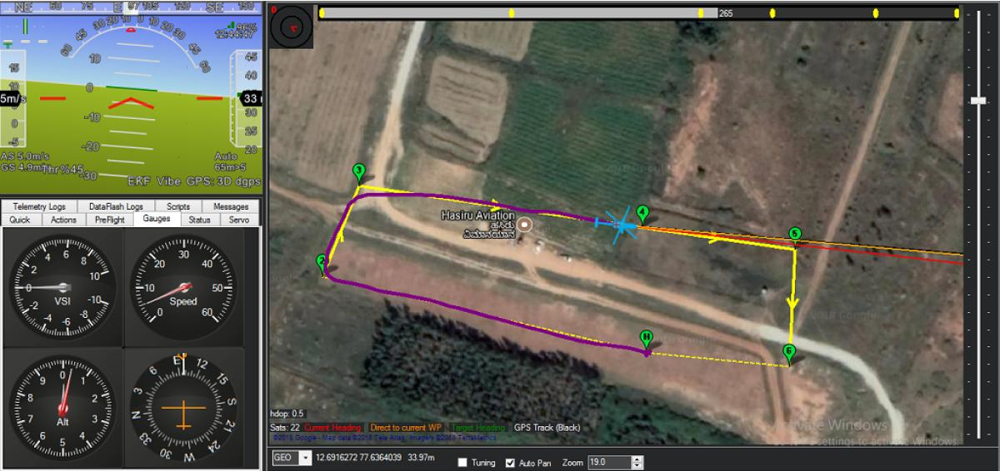Hardware Interface
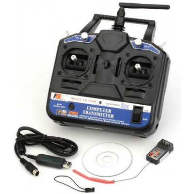14. Evaluating and Improving Chatbot Techniques
NLP Project, Manipal University Jaipur, India
Development of a chatbot or an intelligent conversational agent using Machine learning/Deep learning techniques is an interesting sub-domain of NLP (Natural Language processing).
- Duration : 20 May - 15 July 2017
- Technology: Deep Learning
- Application: Automation, Machine Assistant
- Interface: GUI
- Dataset: Reddit
Extensive work has been done in this field in the past decade. The functioning of these agents is limited. They are mostly retrieval-based agents and are also not aimed at holding conversations which emulate real human interaction. Among current chatbots, many are developed using rule-based techniques, simple machine learning algorithms or retrieval-based techniques which do not generate good results. In this project, I have experimented with the two main self-learning bot techniques, namely retrieval-based technique and generative technique. For easier demonstration, I have also developed a Graphical Web user interface, that allows us to explore both of these techniques. Chatbots today use datasets restricted to a particular domain. These chatbots cannot hold long conversations. They do not perform well if a generalized question out of their training context is asked. I have used the Reddit comments dataset. It contains comments, not just from one field, but from several fields and can better replicate human interactions. But this chatbot will require a filtering method to display only those answers which are conservative and professional. A scoring mechanism for been developed for this purpose. This paper also presents a new way to listen for audio input commands. Every voice based chatbot has a unique identifier, for example in case of Apple’s Siri, it is “Hey Siri!”. This command needs to be invoked in the beginning of the sentence in order for the chatbot to listen to the rest of the question. This paper presents a new method which will allow a user to interact with the chatbot in a more human way.
Results
The most widely used metric for evaluating such dialogue systems is BLEU [8], a metric measuring word overlaps originally developed for machine translation. BLEU analyses the co-occurrences of n-grams in the reference and the proposed responses. It computes the n-gram precision for the whole dataset, which is then multiplied by a brevity penalty to penalize short translations. For BLEU-N, N denotes the largest value of programs considered (usually N = 4). The project yielded a bleu score of 3.3 which is good enough for a generative chatbot with uncleaned data. The training loss decreased substantially after the model was trained on about 70k comments.
Interface
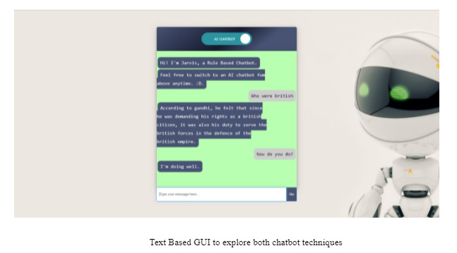Hardware Interface
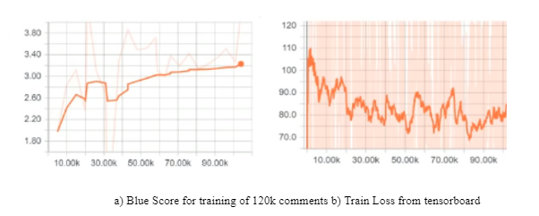15. M-Training Toolkit on Polio/Routine Immunization for CMCs in CGPP
ZMQ SOFTWARE SYSTEMS, Gurgaon, India
The primary strategy to interrupt transmission of wild poliovirus in India is to improve supplemental immunization activities and routine immunization coverage in priority districts with a focus on 107 high-risk blocks of western Uttar Pradesh and central Bihar.
- Duration : January to July 2013
- Technology: Android and J2ME App
- Application: Immunization, Building Health system’s
- Interface: GUI - Android App and J2ME App
- Dataset: Address and People
Villages or urban areas with a history of wild poliovirus transmission, or hard-to-reach or resistant populations are categorized as high-risk areas within blocks. The Social Mobilization Network (SM Net) is formed in Uttar Pradesh to support polio eradication efforts through improved planning, implementation and monitoring of social mobilization activities in those high-risk areas.
Results
Vaccination outcomes in SM Net areas were as high as or higher than in non-SM Net areas. There was considerable variation in vaccination outcomes between districts.
Interface
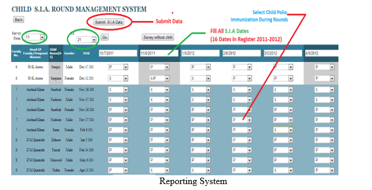Hardware Interface
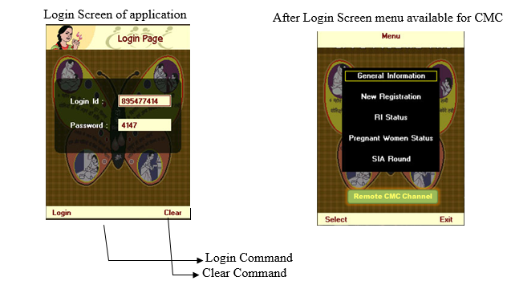16. Automatic Wireless Eye Monitoring System
Essilor India Private Limited, New Delhi
Wireless communication system is designed and developed for remote patient monitoring for Instant Data Collection, Content development and better client interaction
- Duration : 19.06.2012 to 31.07.2012
- Technology: IoT, Web Development
- Application: Remote monitoring the condition of patient
- Interface: Keil compiler,Embedded C
- Dataset: Instant Data Collection
- Hardware: 8051 series Microcontrollers, Encoder IC, Decoder IC, LCD, Transformer, Voltage Regulator, RF Module etc.
Results
Hardware Interface
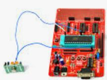Interface
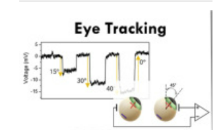17. Energy consumption optimization for Smart Classroom using Computer Vision
AI Project, Manipal University Jaipur, India
The goals are to reduce the unnecessary energy consumption of a smart home or office or classroom.
- Duration : July 2019 to Dec 2019
- Technology: Computer Vision
- Application: Smart Homes, Smart Lighting Control
- Interface: Smartphone App
- Hardware: Raspberry pi, Camera, Resistor, Breadboard, Relay
Computer Vision are used in this work to implement a smart home control network. The goals are to reduce the unnecessary energy consumption of a smart home or office or classroom. Computer vision with one coordinator, which is integrated into Raspberry pi, is established in each room. The coordinator is responsible for transferring environmental parameters obtained by WSNs to the management station. The control messages for home appliances are directly transferred using WSNs. Analysis of the illumination of a fluorescent lamp along with coordinates delay for even more energy conserving.
Results
The energy saving of lighting systems relative to those without smart control was evaluated. Numerical results indicate that the electricity consumption can be reduced by at least 40% under the smart control. Moreover, a prototype for the proposed smart home control network with illumination of light was implemented. Experimental tests demonstrate that the proposed system for smart home control networks is practically feasible and performs well.
Hardware Interface
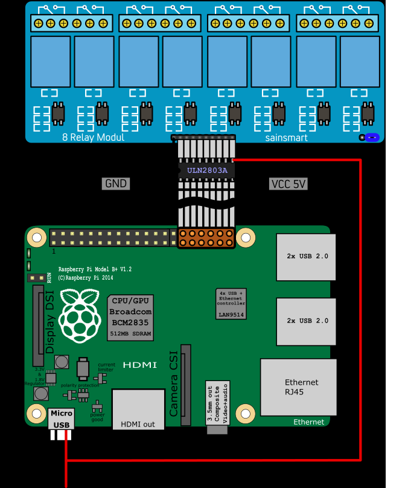Results
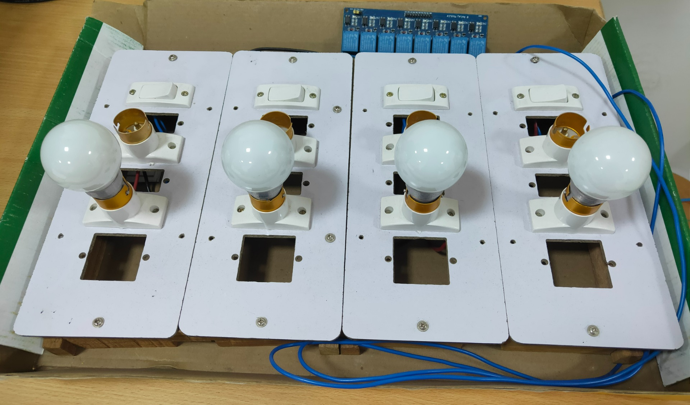18. Unmanned Autonomous Grounded Surveillance Rover
IoT Project, Manipal University Jaipur, India
- Duration : Jan 2016 – Dec 2017
- Technology: IoT, Computer Vision, Artificial Intelligence
- Application: Surveillance for military or pedestrian
- Interface: Arduino, Raspberry pi
- Hardware: Arduino, Raspberry pi, L293D Motor Driver Shield, IR sensors, DC Motors, Robot chassis, tyres and connectors
The inevitability of robots is fundamentally a result of the need to reduce manpower requirements in military organizations, while sustaining the capability needs of the organizations. The need to reduce manpower is driven by the trends of the macro environment for military organizations, which include the aging demographics and reducing public tolerance to human casualties. The evolving operational environment that places increasing demands on soldiers and exposes the limitations of the human body also supports the adoption of robots.
The military forces of the future will use multi-agent robotic workforces for reconnaissance and surveillance, logistics and support, communications infrastructure, forward-deployed offensive perations, and as tactical decoys to conceal maneuver by manned assets. Towards this end, there is a clear and definite need for optimal, multi-robot control strategies in the synthesis, design, implementation, and fielding of autonomous and semi-autonomous teams of combat robots for military systems. Proven coordination methods are essential to enable interactions within dynamic and hostile environments, synchronized maneuvers, sensible and robust rules of engagement (ROE), and reliable field behavior.
19. IoT based Surveillance Rover
IoT Project, Manipal University Jaipur, India
- Duration : Jan 2016 – Dec 2017
- Technology: IoT, Computer Vision, Artificial Intelligence
- Application: Surveillance for military or pedestrian
- Interface: Arduino, Raspberry pi
- Hardware: Arduino, Raspberry pi, L293D Motor Driver Shield, IR sensors, DC Motors, Robot chassis, tyres and connectors
Most of the application systems in the industry are designed in such a way that they give outputs in accordance with the predefined conditions. To overcome this problem, I have proposed a method for autonomous control and decision making and reporting system, these types of mini robots contains self-neural schema framework for autonomous control. The robot is expected to navigate through the maze, that is, the robot is expected to avoid the obstacles while trying to find its way out. This project also considers camera for extended view.
The inevitability of robots is fundamentally a result of the need to reduce manpower requirements in military organizations, while sustaining the capability needs of the organizations. The need to reduce manpower is driven by the trends of the macro environment for military organizations, which include the aging demographics and reducing public tolerance to human casualties. The evolving operational environment that places increasing demands on soldiers and exposes the limitations of the human body also supports the adoption of robots.